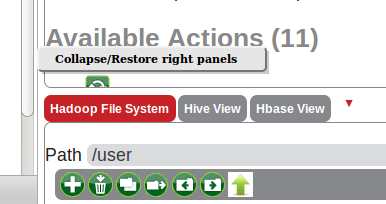

Splitter Vertical - when pressing the right mouse button a menu appears with the option to Collapse/Restore right panels. by clicking on the splitter option changes position.

Splitter Horizontal - when pressing the right mouse button a menu appears with the three option to Top, Middle, Bottom. by clicking on the splitter option changes position Top or Middle or Bottom.